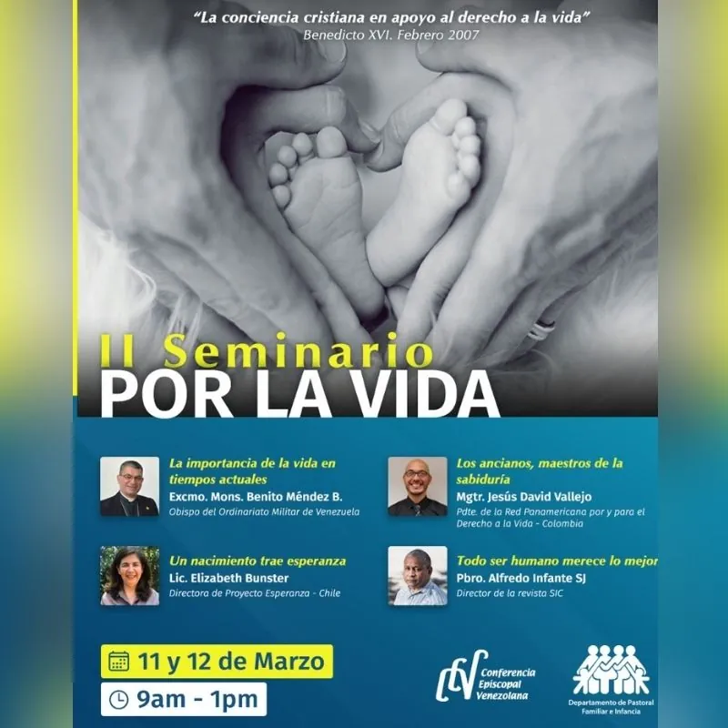

RealizadoRealizadoCampaña · Familia
Semana por la Vida 2022: «Custodiar toda la vida»
Semana virtual, del 20 al 27 de marzo de 2022, que miró la vida en todas sus formas, abierta por el II Seminario por la Vida.

Datos del evento
- Fecha
- Semana del 20 al 27 de marzo de 2022; II Seminario por la Vida el 11 y 12 de marzo
- Hora
- No publicada en las notas oficiales.
- Modalidad y lugar
- Virtual · En línea
- Organiza
- Departamento de Familia e Infancia del SPEV de la Conferencia Episcopal Venezolana
- Estado
- Realizado
Cómo fue
El Departamento de Familia e Infancia propuso mirar la vida en todas sus formas. La semana la abrió el II Seminario por la Vida, de dos mañanas (11 y 12 de marzo) y cuatro ponencias: la esperanza ante la gestación, la importancia de la vida hoy, los ancianos como maestros de sabiduría y la calidad de vida como atributo de la dignidad.
Durante la semana hubo temas como «Un nacimiento trae esperanza».
Qué se hizo
- Siguieron el seminario virtual de dos días.
- Reflexionaron durante la semana sobre la vida en todas sus formas.
Quién participó
- El director ejecutivo del Departamento de Familia e Infancia.
- El presidente de la CEV de entonces, con el saludo de bienvenida.
- Un obispo del Ordinariato Militar, un director de comunicación de la CEV y especialistas invitados.
Galería

Semana por la Vida 2022: «Custodiar toda la vida», En línea, semana del 20 al 27 de marzo de 2022; II Seminario por la Vida el 11 y 12 de marzo. Afiche del II Seminario por la Vida, 11 y 12 de marzo de 2022, con los pies de un recién nacido entre manos. Crédito: Pieza gráfica de la CEV.